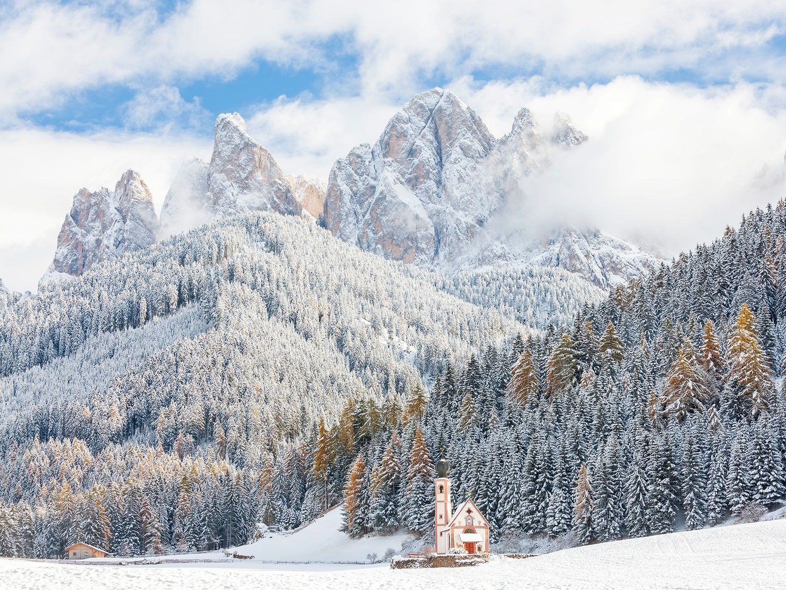
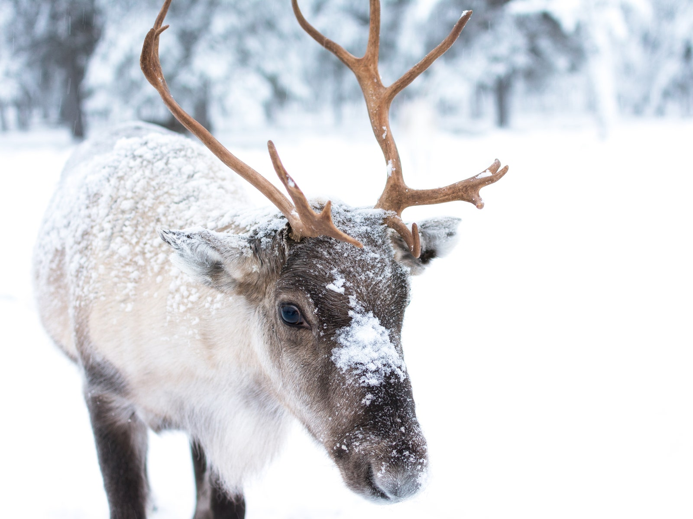
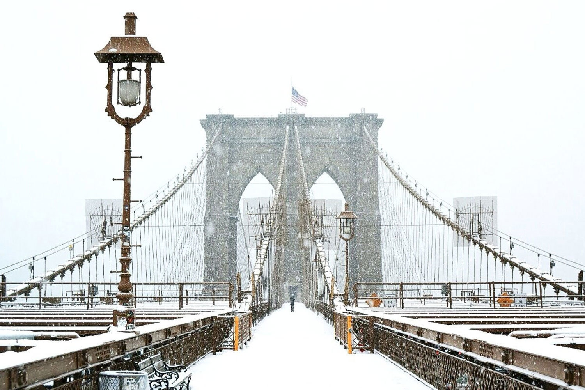
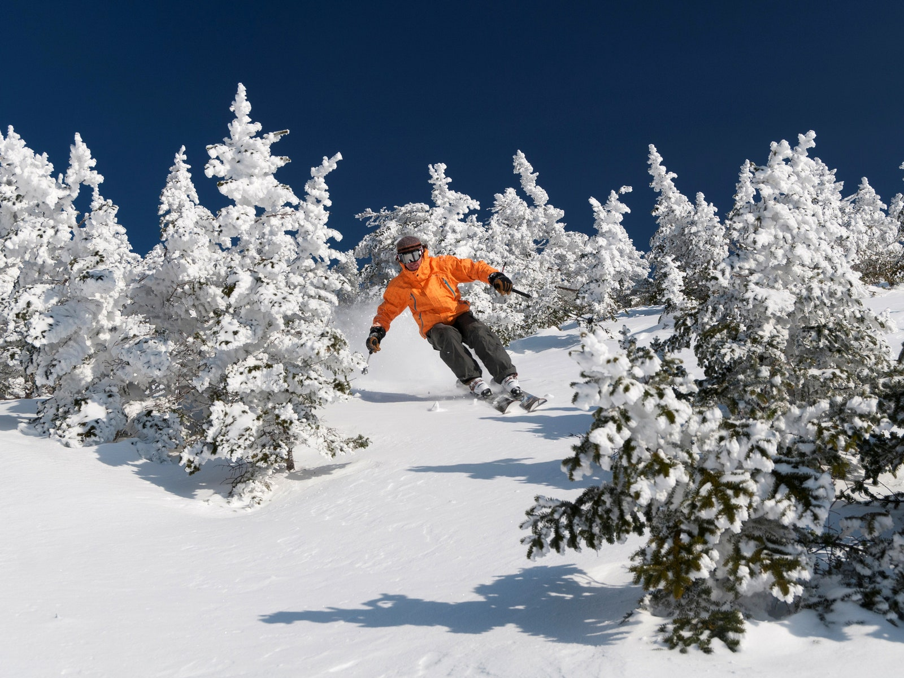
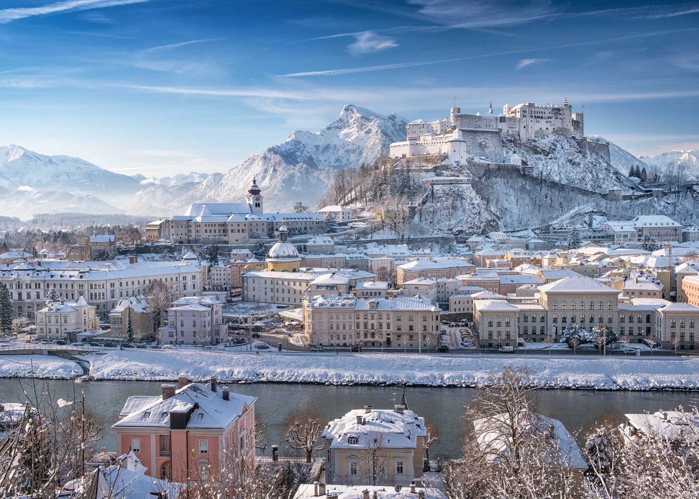
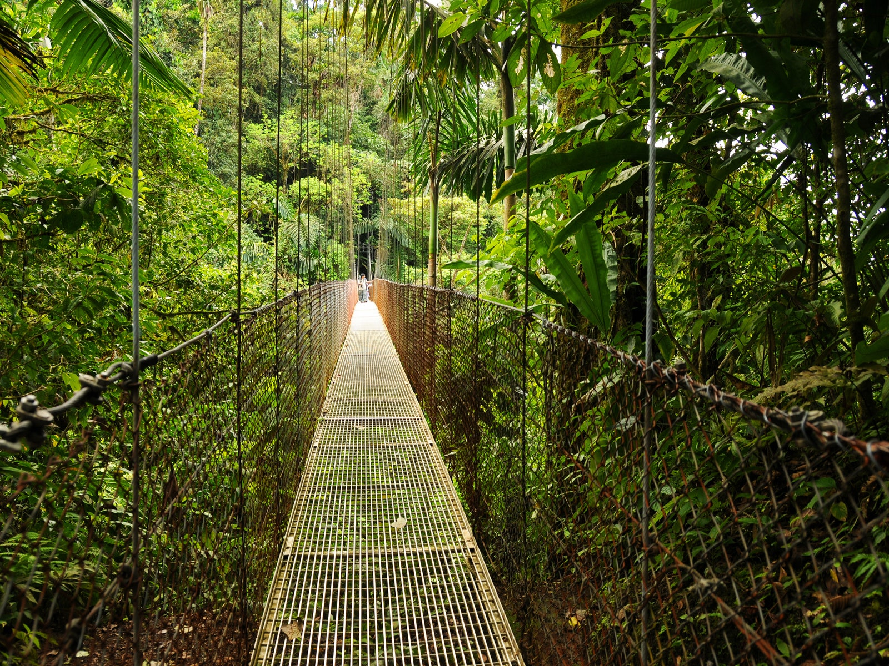

Winter is waiting for you!
Chiang Mai, Thailand

Chiang Mai has a tropical savanna climate (Köppen Aw), tempered by the low
latitude and moderate elevation,
with warm to hot weather year-round, though nighttime
conditions during the dry season can be cool and much
lower than daytime highs.
The maximum temperature ever recorded was 42.4 °C (108.3 °F) in May 2005.
Ideal For- Honeymooners, nature lovers, culture vulture.
Things to do - Nature viewing, trekking.
Attractions - Wiang Kum Kam, the ancient underground City.
Hostels to stay - Siri Condo, The prio condo.
Mountain Reindeer – Norway

The mountain reindeer, also called the Norwegian reindeer, northern reindeer, Common reindeer or
mountain
caribou,
is a mid-sized to large subspecies of the reindeer that is native to the western
Scandinavian
Peninsula, particularly
Norway. In Norway, it is called fjellrein, villrein or tundra-rein.
Ideal For- Nature lovers
Things to do - Nature walks, Animal watching
Attractions - Reindeer
Hostels to stay - Green Embassy Hotel
Lisbon, Europe

Lisbon is Portugal’s hilly, coastal capital city. From imposing São Jorge Castle, the view
encompasses the old
city’s pastel-colored buildings, Tagus Estuary and Ponte 25 de Abril
suspension bridge. Nearby, the National
Azulejo Museum displays 5 centuries of decorative ceramic
tiles.
Ideal For- Natural snowfall lovers, honeymooners
Things to do - Nature walks, bird watching
Attractions - Visit Lisbon of the River Tagus, whose riverfront is dedicated to leisure
activities
and links the
monumental zone of Belém with the modern area of the Parque das Nações.
Hostels to stay - SnowHotel kirknis
Riviera Nayarit, Mexico

The Riviera Nayarit is a nearly 200-mile stretch of coastline in Mexico between the historic
port of San Blas,
of Nayarit to where the Río Ameca empties into Banderas Bay, Nuevo Vallarta.
Riviera Nayarit was named to promote
the coastline of Nayarit and it includes such notable sites
as Chacala Bay and Chacalilla.
Things to do- Swimming
Weather - sea temperatures a pleasant 28°C
Attractions - Sayulita Beach, Playa los Muertos
Hostels to stay - Maraica
Cape Town, South Africa

Cape Town is a port city on South Africa’s southwest coast, on a peninsula beneath the imposing Table
Mountain.
Slowly rotating cable cars climb to the mountain’s flat top, from which there are sweeping
views of the city, the busy
harbor and boats heading for Robben Island, the notorious prison that
once
held Nelson Mandela, which is now
a living museum
Weather- 10 °C, Wind SE at 11 km/h, 71% Humidity
Things to do - nature scene, Trekking
Attractions - Mountain Overlooks.
Hostels to stay - Maclears Beacon
Stowe, Vermont

Stowe is a town in northern Vermont. It’s overlooked by Mount Mansfield, known for its trails and
ski slopes. The Auto Toll
Road climbs to the summit ridge. Near the base, Smugglers’ Notch State
Park
has dense forest and a narrow mountain pass.
Weather- 24 °C, Wind NW at 11 km/h, 44% Humidity
Things to do - Nature walks, bird watching
Attractions - Dabbe falls, Linganamakki Dam, Tunga Anicut Dam, Thyvare Koppa Lion,
Tiger reserve, Sharavati River.
Hostels to stay - Green Embassy Hotel